第12章 乘法器的变体（Variations in Multipliers）
本章导读
主流（Booth + 压缩树）之外，乘法器还有一个丰富的”特种装备库”：分治（Karatsuba）、位串行、模乘、平方专用、乘加融合。它们各守一个细分场景——大数、低功耗、密码学、DSP——本章一次看齐。
这些变体的共同背景是“不能或不愿从头造乘法器”：手里只有现成的小乘法器、加法器或查找表，或者受限于芯片面积、封装引脚、布线长度。理解了这层约束，才能理解下面每一种设计为什么长成那个样子。
12.1 分治设计（Divide-and-Conquer Designs）
把 \(k\) 位乘法拆成 \(k/2\) 位小块：直接拆需 4 个子乘法；Karatsuba 分解用代数恒等式省掉一个：
\[ x_H y_H \text{ 与 } x_L y_L \text{ 之外，交叉项 } x_H y_L + x_L y_H = (x_H + x_L)(y_H + y_L) - x_H y_H - x_L y_L \]
4 个子乘法 → 3 个，递归下去渐近复杂度从 \(O(k^2)\) 降到约 \(O(k^{1.58})\)。
先看”直接拆”这条基线。把 \(2b\) 位操作数写成 \(2^b a_H + a_L\) 与 \(2^b x_H + x_L\)，则 \((2^b a_H + a_L)(2^b x_H + x_L) = 2^{2b}a_Hx_H + 2^b(a_Hx_L + a_Lx_H) + a_Lx_L\)。四个 \(b\times b\) 部分积中，\(a_Hx_H\) 与 \(a_Lx_L\) 的位域不重叠（一个占高 \(2b\) 位、一个占低 \(2b\) 位），可以拼成一个 \(4b\) 位数，真正需要相加的只有三项，因此只需一级进位保存加法 + 一次 \(3b\) 位进位传播加法收尾，而且低 \(b\) 位乘积在子乘法完成后立刻可用。规模可以往上推：用 \(b\times b\) 模块拼 \(3b\times 3b\) 得到 5 个待加数、拼 \(4b\times 4b\) 得到 7 个，分别用一行 \((5;2)\) 或 \((7;2)\) 计数器加一个 \(5b\) 或 \(7b\) 位快速加法器收尾。具体数字：用 4×4 乘法器搭 16×16，需要 16 个小乘法器、24 个 \((7;2)\) 计数器和一个 28 位快速加法器；32×32 用 8×8 模块搭出来的结构与之完全相同——分治是自相似的。
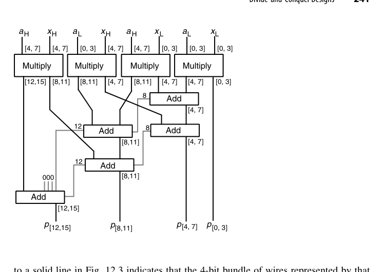
如果手头只有 \(b\) 位加法器（而非 CSA），\(2b\times 2b\) 乘法也能只用 \(b\) 位加法器完成。图 12.3 中每条实线代表跨越位区间 \([i,j]\) 的一组 \(b\) 位线束，单个整数标注的灰线代表 1 位；整个累加只需 5 个 \(b\) 位加法器模块、电路深度 4。当 \(b\) 位加法器是廉价货架元件时这个方案很划算，其速度与”CSA 归约 + 三级 \(b\) 位加法器串成 \(3b\) 位最终加法”相差不大。同理，用 \(8\times4\) 乘法器做模块时，16×16 可由 8 个这样的单元 + 一个 5-to-2 归约电路 + 28 位加法器构成。Karatsuba 的价值则在”位宽极大”这一端才显现：它把子乘法从 4 个降为 3 个（\(a_Hx_H\)、\(a_Lx_L\)、\((a_H+a_L)(x_H+x_L)\)），代价是三次额外加减，递归展开后复杂度降为 \(O(k^{\log_2 3}) \approx O(k^{1.585})\)。
Karatsuba 的递归管理与额外加法有常数开销，只在位宽很大（数百位以上）时才回本——密码学的大数乘法库（如 4096 位 RSA）是它的主场，64 位 CPU 乘法器用它反而是赔本买卖。
12.2 可加乘模块（Additive Multiply Modules, AMM）
一种积木化思路：设计”\((a \times b) + c\) 型”的小乘加模块，多块级联拼出大乘法器。优点是模块化、可扩展、位宽可按需裁切；缺点是拼接处的进位/延迟要仔细对表。在标准单元库受限或需要快速拼出非标准位宽时是实用选择。
标准 AMM 计算 \(p = ax + y + z\)，其中 \(a\)、\(y\) 是 4 位数，\(x\)、\(z\) 是 2 位数，结果最大值为 \((15\times3)+15+3 = 63\)，正好 6 位。这不是巧合，而是一般规律：
\[ (2^b-1)(2^c-1) + (2^b-1) + (2^c-1) = 2^{b+c}-1 \]
即一个 \(b\times c\) AMM 有 \(b\) 位与 \(c\) 位两路乘法输入、\(b\) 位与 \(c\) 位两路加法输入，输出恰好 \(b+c\) 位——位数刚刚够，一位不多；实现上只需 4 个 FA 加一个 4 位加法器。
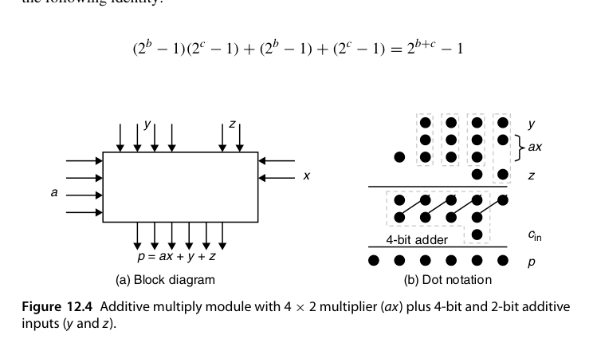
用 AMM 拼乘法器要遵守一条位域规则：以 \(a[j, j+b-1]\) 与 \(x[i, i+c-1]\) 为乘法输入的 AMM，其两路加法输入应覆盖位区间 \([i+j,\ i+j+b-1]\) 与 \([i+j,\ i+j+c-1]\)——因为乘积 \(a\cdot x\) 的最低有效位权重就是 \(2^{i+j}\)，加法输入必须与乘积位域对齐。遵守这条规则，上一节那个 8×8 例子只用 8 个 4×2 AMM 即可实现（模块数已是下限），每个 AMM 最多比 4×2 乘法器慢一级 FA，图 12.5 的关键路径穿过 6 个 AMM，因此”加法功能”贡献的延迟不超过 6 级 FA；考虑到一个 4×2 AMM 的成本低于”4×2 乘法器 + 4 位加法器”之和，这个方案很划算。
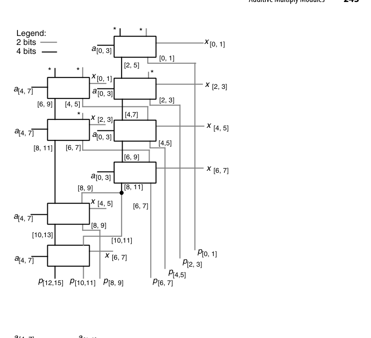
图 12.6 是同样 8 个 AMM 的另一种连法，取舍很典型：图 12.5 快（关键路径 6 级），图 12.6 慢（穿过全部 8 个模块）但更规整，能紧凑地推广到任意 \(4h_2\times2h_1\) 乘法器。再看推广规则：若 \(b\)、\(c\) 都能整除 \(k\) 与 \(l\)，则 \(k\times l\) 乘法器可用 \(kl/(bc)\) 个 AMM 组织成 \((k/b)\times(l/c)\) 或 \((k/c)\times(l/b)\) 阵列——同一函数有两种版图形状，为面积适配留出余地，但两种形状的速度可能差别不小。
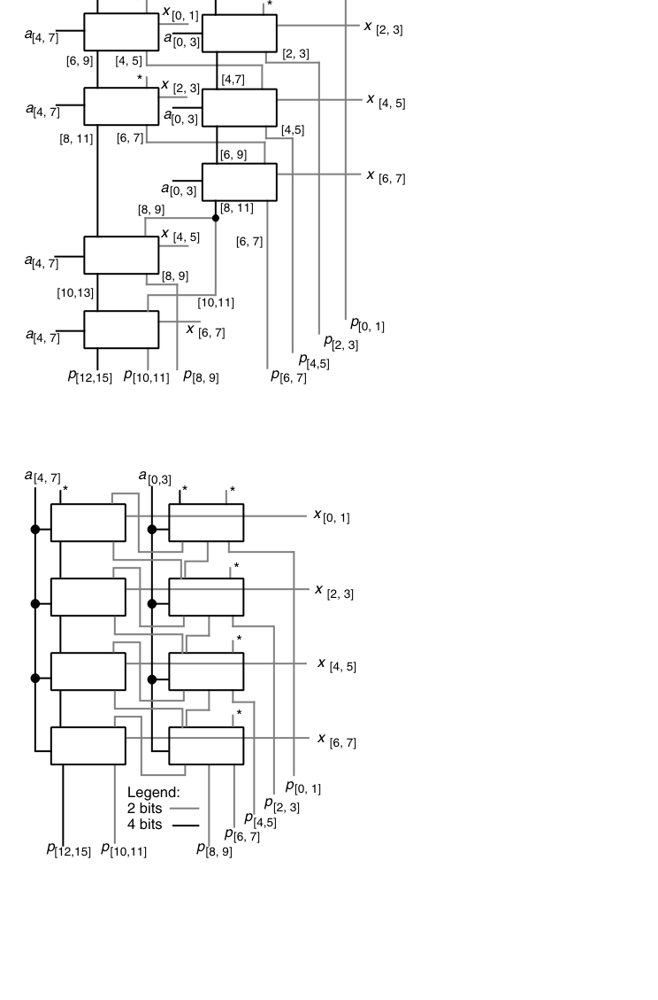
12.3 位串行乘法器（Bit-Serial Multipliers）
与位串行加法器（5.1 节）一脉相承：每拍处理一比特，面积常数级，\(k\) 拍出一个结果。进一步可组成位串行阵列，流水吞吐每拍一个乘积——这就是脉动阵列（systolic array）思想的原型之一。今天的 AI 加速器（如 TPU 的脉动阵列）把这种”数据流过规则阵列、每拍每单元做一次乘加”的思想发挥到了极致（第 25.6 节再会）。
位串行路线的吸引力来自三个具体约束：引脚少（数据本身就以串行形式进出）、连线短（VLSI 中互连功耗与延迟的主要来源）、占地小；更关键的是紧凑版图允许把时钟拉得很高，使它在速度上接近复杂得多的并行设计。先看半脉动（semisystolic）版本：图 12.7 的 4×4 乘法器中，被乘数 \(a\) 并行从上方送入，乘数 \(x\) 从右侧逐位串行送入（LSB 先来），每一位 \(x_i\) 与 \(a\) 相乘后累加到以进位保存形式存放在进位/和锁存器中的累积部分积上——进位位留在原格不动，和位传给右侧邻格，等价于下次加法前把部分积整体右移一位，结果位从右侧逐位流出。之所以叫”半脉动”，是因为 \(x_i\) 被广播到多个单元，违反了纯脉动设计”只有短、局部连线”的要求。\(k\) 位无符号乘数 \(x\) 必须补 \(k\) 个 0 才能让进位一路传到输出，因此每 \(2k\) 拍完成一次 \(k\times k\) 整数乘法；这类单元很适合”把一个位串行输入乘以一组预存常数之一”的场景——常数从本地 RAM 读出存寄存器，一个工作周期（\(2k\) 拍）换一个，因此需要通用乘法器而非第 9.5 节那种专用常数乘法器。
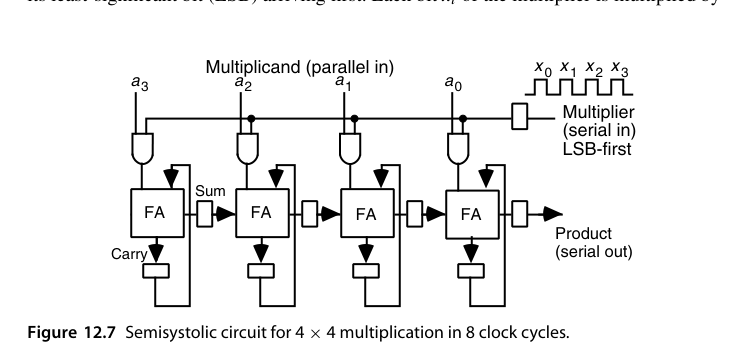
要把半脉动变成全脉动，必须消除 \(x_i\) 的广播，手段叫脉动重定时（systolic retiming）。其依据是一条优美的不变式：把同步电路在某处切成 \(c_L\) 与 \(c_R\) 两半，可以把单向上的所有信号统一延迟 \(d\)、反方向上的统一提前 \(d\)，而不改变电路功能与外部时序——前提是两半的主输入/主输出也相应调整，且所有需要提前 \(d\) 的信号原本延迟不少于 \(d\)。
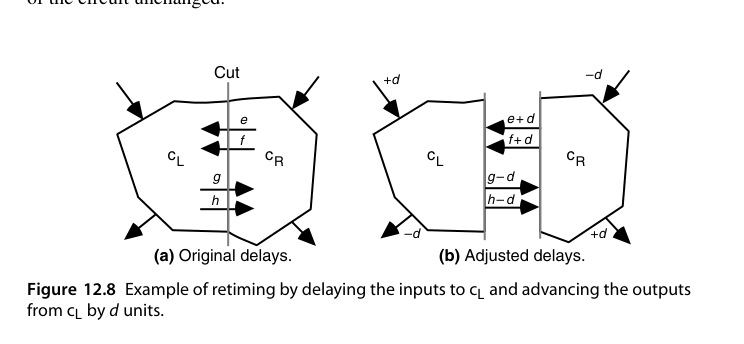
按此规则对图 12.7 依次做三次切分（图 12.9 的 Cut 1/2/3），每次把左行信号延迟 1 拍、右行信号提前 1 拍，广播被彻底消除，但新代价出现了：每拍要穿过 4 个 FA 的长组合路径——问题出在重定时产生的”零延迟连线”。标准解法是把图 12.7 中所有延迟先翻倍再做重定时，这样每拍只允许信号在相邻单元间移动一次；代价是乘数 \(x\) 需隔拍输入、总周期翻倍，图 12.10 的全脉动设计需要 15 拍完成 4×4 乘法。这就是”完全局部连线”必须付的账。
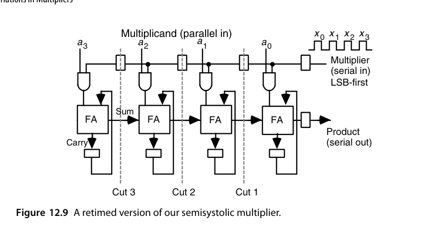
若要求被乘数也串行输入，更优雅的一路是用递推式重新推导。记 \(a^{(i)}\)、\(x^{(i)}\) 为 \(a\)、\(x\) 截至第 \(i\) 位的值，把 \(k\) 位 2 的补码操作数符号扩展到 \(2k\) 位，定义 \(p^{(i)} = 2^{-(i+1)}a^{(i)}x^{(i)}\)，利用 \(a^{(i)} = 2^ia_i + a^{(i-1)}\)、\(x^{(i)} = 2^ix_i + x^{(i-1)}\) 可得
\[ 2p^{(i)} = p^{(i-1)} + a_i x^{(i-1)} + x_i a^{(i-1)} + 2^i a_i x_i \]
其工程含义是：只要把 \(p^{(i-1)}\) 存成双进位保存（double carry-save）形式（位点图上 3 行而非 2 行），就能用一个 \((5;3)\) 计数器与 \(a_ix^{(i-1)}\)、\(x_ia^{(i-1)}\) 合并成下一步结果；最后一项 \(2^ia_ix_i\) 在第 \(i\) 位之外全是 0，用一个 mux 处理即可（在持有令牌 \(t\) 的单元上接到 \(s_{out}\)），令牌第 0 拍给第 0 个单元、之后逐拍左移实现对齐。\((5;3)\) 计数器的 3 位和输出存入锁存器前要整体右移一位：LSB 接右邻单元、中间位原地、MSB 接左邻单元。一个值得记住的结论是：两个 \(k\) 位数只需 \(k-1\) 个这样的单元就能算出完整 \(2k\) 位乘积——因为最大的中间部分积虽然宽达 \(2k-1\) 位，但等到它出现时已经有 \(k\) 位乘积被产生并移出了。
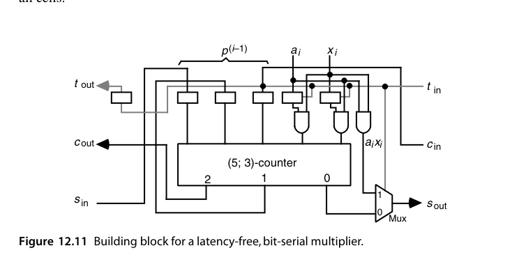
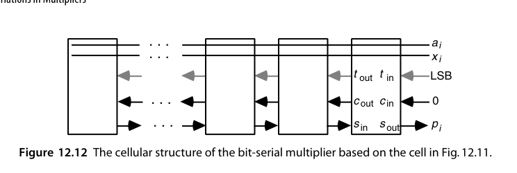
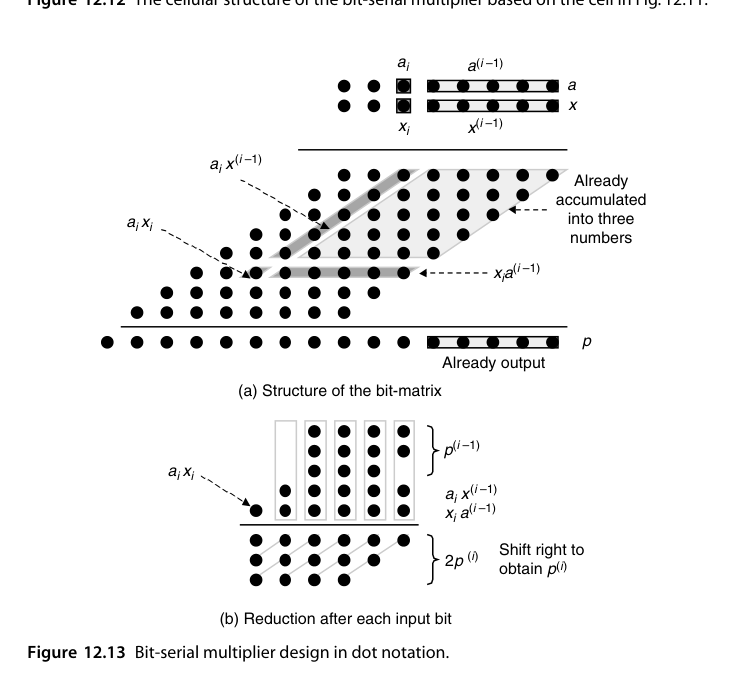
位串行/脉动乘法器的现代转世就是 AI 加速器的脉动阵列。区别只在于：当年的单元是单比特 FA，今天的单元是 8 位或 16 位乘加器；“数据只有短局部连线、每拍流动一格”的原则没有变。理解位串行乘法器，等于理解了 Tensor Core 类单元的原始设计动机。
12.4 模乘法器（Modular Multipliers)
模 \(m\) 乘法 \((x \cdot y) \bmod m\) 是公钥密码（RSA/ECC）的核心操作。基本套路：
- 乘后约简：先乘出 \(2k\) 位乘积，再做模 \(m\) 除法取余——约简是瓶颈；
- 交织约简：每加/移一次就立即模 \(m\) 修正（减 \(m\) 的条件选择），乘积永不超界；
- Montgomery 乘法：把数变换到”Montgomery 域”（乘 \(2^{-k}\) 的加权表示），模乘变为一系列移位-加-条件减，完全避开除法——密码硬件的事实标准；
- 对 \(2^k \pm 1\) 型模数（Mersenne/Fermat 素数），折叠修正几乎免费，NIST 椭圆曲线素数专为这类优化设计。
模数 \(m = 2^b\) 与 \(m = 2^b-1\) 两个特例一如既往地简单。若部分积用进位保存加法累加，则 \(m=2^b\) 时直接忽略第 \(b-1\) 位的进位输出；\(m = 2^b-1\) 时把该进位回接到第 0 列（end-around carry），因为 \(2^b \equiv 1 \pmod{2^b-1}\)——这就是 mod-\((2^b-1)\) CSA。4×4 mod-15 乘法器是完整例子：由于 \(16 \equiv 1 \pmod{15}\)，图 12.15 左上角灰色三角形里的 6 个重位点可整体”搬家”，把三角分布变成方形矩阵，随后用两级带回接 CSA 加一个带回接进位的 4 位加法器收尾。这个模 15 乘法器比普通 4×4 二进制乘法器还要简单。
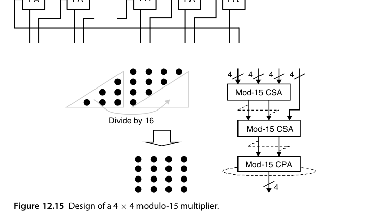
一般模数没这么便宜。以 mod 13 为例，利用 \(16 \equiv 3\)、\(32 \equiv 6\)、\(64 \equiv 12 \pmod{13}\)，三角形内每个位点都要替换成低 4 列中的两个位点（图 12.16），位点数变多，最后还需一次”把结果归入 \([0,12]\)“的调整。经过一处小简化（从第 1 列去掉一个位点、在第 0 列加两个）之后，剩下的就是模 13 的多操作数加法问题。多操作数模加法有个通用套路（图 12.17）：先用 CSA 树归约，把溢出部分经查找表或专用逻辑做模约简，最终化为三输入模加器再收尾——“\(n\) 输入模加”不直接做，而是先降维到 3 输入。此外，mod-\((2^b+1)\) 在 diminished-1 表示下只需把 \(a\) 的表示与 \(x\) 的每一位相乘再相加，调整代价与时延增加都不显著。
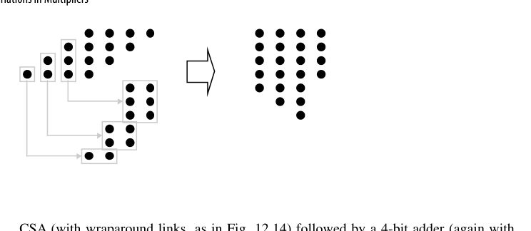
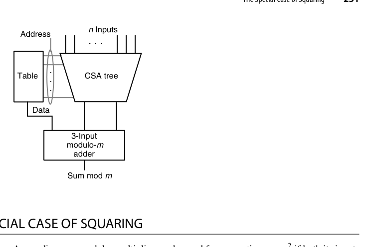
12.5 平方的特殊情形（The Special Case of Squaring)
\(x^2\) 的部分积有对称性：\(x_i x_j\) 与 \(x_j x_i\) 成对出现，可合并为 \(2 x_i x_j\)（左移一位）；对角线项 \(x_i x_i = x_i\) 退化为单比特。结果：平方器所需部分积约为一般乘法的一半，面积和延迟都省近一半。在需要大量平方的场景（复数模方、范数计算、密码学的 square-and-multiply）值得单独做一个单元。
以 5 位无符号数为例，化简规则只有两条：对角项 \(x_ix_i \to x_i\)（单比特，不需要与门）；同列中的 \(x_ix_j\) 与 \(x_jx_i\) 合并为下一高位列中的一个 \(x_ix_j\)。化简后的位矩阵有两个直接后果：平方的最低两位 \(p_0\)、\(p_1\) 零成本得到；剩余位的计算从一个五操作数加法退化为三操作数加法——而普通 5×5 乘法需要五操作数加法。
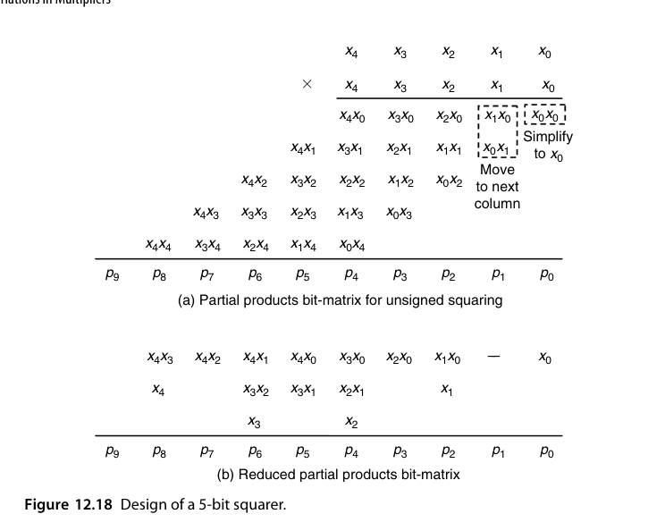
还能再抠一点。利用恒等式 \(x_1x_0 + x_1 = 2x_1x_0 + x_1(1-x_0) = 2x_1x_0 + x_1\bar{x_0}\)，可把第 2 列的 \(x_1x_0\)、\(x_1\) 替换为第 2 列的 \(x_1\bar{x_0}\) 与第 3 列的 \(x_1x_0\)，从而把最终 CPA 宽度从 7 位压到 6 位；第 4、6 列也能做类似替换，但在这个例子里既不减面积也不提速——优化要看整体账，而不是逐列局部最优。字宽很小时平方还有捷径：用一张 \(2^k\) 项的查找表直接得到平方值，比”两个 \(k\) 位数相乘”所需的表小得多；更妙的是两个数相乘可以用两次平方查表加三次加法完成，依据是 \(ax = [(a+x)^2 - (a-x)^2]/4\)（第 24 章系统讨论查表方法）。平方的另一个高频用途是幂运算：由 \(x^{13} = x((x(x^2))^2)^2\) 可知”平方—乘—平方—平方—乘”五步即可求出（第 23.3 节展开）。
12.6 乘加融合单元（Combined Multiply-Add Units)
\(a \times b + c\) 是 DSP 的原子操作（MAC）。融合实现比”乘法器 + 加法器”串联更快：\(c\) 直接作为额外一行注入压缩树，几乎零成本。这条路走到极致就是浮点的 FMA（fused multiply-add，第 18.5 节）——一次舍入完成乘加，精度与速度双赢，是现代 CPU/GPU 浮点峰值算力的度量单位（FLOPS 按 FMA=2 计）。
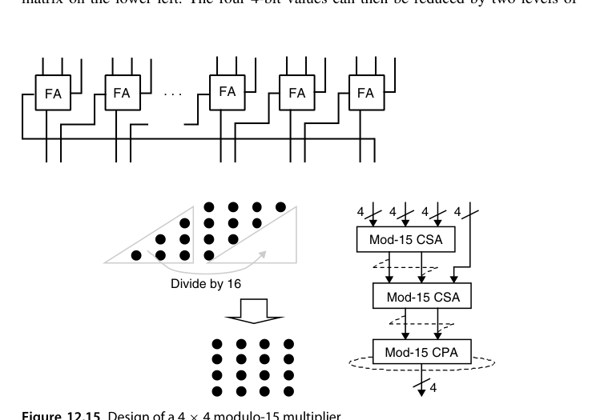
值得区分的是：AMM（12.2 节）虽然也叫”乘加”，但它的加法输入宽度与乘法输入相当；这里关心的是另一种形态——加法输入显著宽于乘法输入，比如 24 位操作数相乘得到 48 位乘积、却要累加到一个 64 位运行和中。更宽的中和是必需的：或为避免中间步骤溢出，或为在累加过程中对抗误差累积。实现上有三种做法：先用 CSA 树把乘法输入压成进位保存形式、再用一个 CSA 与加法输入合并、最后走快速加法器；或者运行和也保持进位保存，这样每步只需两级 CSA（硬件结构与第 11 章图 11.9 的部分树乘法器几乎一致——这不是巧合，二者都在做”多操作数归约 + 累积”）；最彻底的是完全合并（merged），把宽加法输入的位点直接铺进乘法器的部分积矩阵一起归约，此时加入宽加法输入的速度与成本代价都很小。
“乘加”和”乘累加”在硬件上其实是同一件事，真正的分水岭在舍入次数。普通做法是乘积舍入一次、加法再舍入一次；融合做法只舍入一次，中间结果保持全精度。这既省时间，也消除了”双舍入误差”——在浮点语境下，这就是 FMA 的全部价值所在（第 18.5 节）。
本章小结
- 分治：\(2b\times2b\) → 4 个子乘 + 三操作数加法；\(16\times16\) 用 16 个 4×4 + 24 个 \((7;2)\) 计数器 + 28 位 CPA。
- Karatsuba：大数乘法的分治加速，百位以上才划算；AMM：\(b\times c\) 模块输出恰好 \(b+c\) 位，同一函数可有两种阵列形状。
- 位串行/脉动：面积换时间，重定时消除广播，AI 阵列的祖师爷。
- 模乘：\(2^b\) 丢进位、\(2^b-1\) 回接进位；mod 15 比普通乘法器更简单。
- 平方器部分积减半（5 位例：五操作数加法 → 三操作数加法）；MAC/FMA 把加数免费塞进压缩树。
原书插图
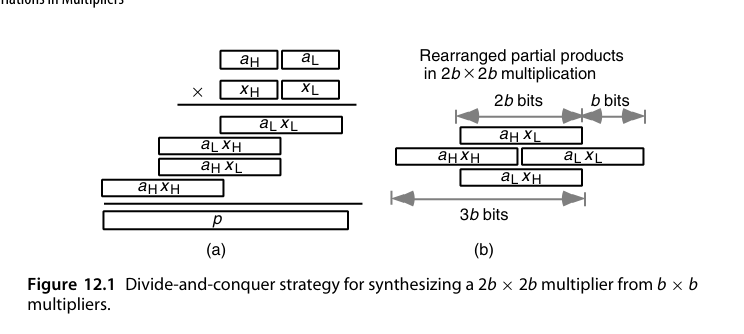
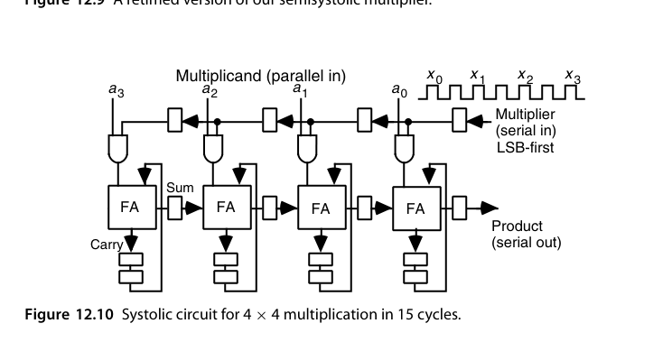